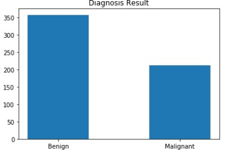
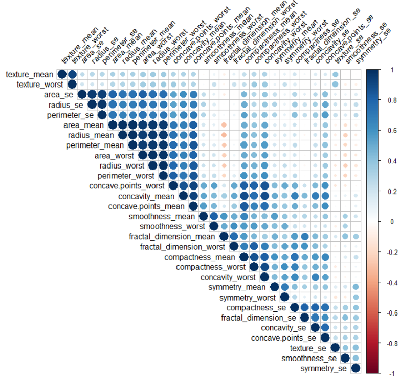
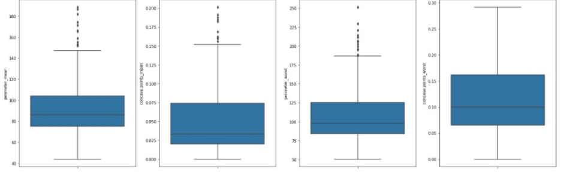
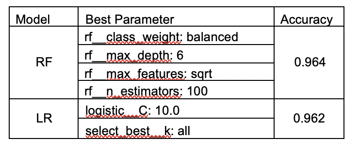
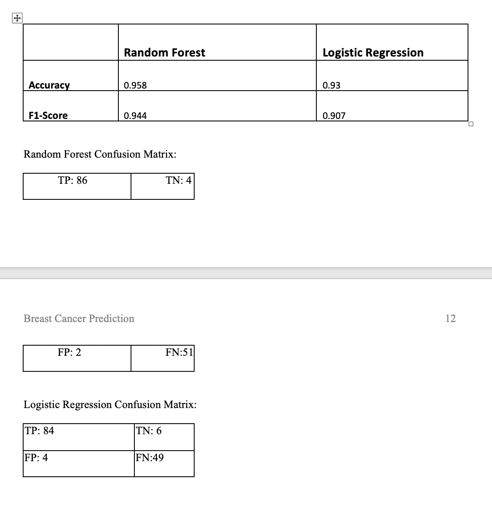

Breast Cancer Prediction by Machine Learning

View code on github
Introduction
Breast Cancer is the 2nd most common cancer in women. But, on rare scenario can also happen to men. It is 2nd leading cause of deaths of women after lung cancer. A fine needle biopsy is an effective tool in evaluating and diagnosing suspect lumps or masses. With early diagnosis of breast cancer, patients can be isolated for early treatment for a better chance of survival. Early detection of disease has become a crucial problem due to rapid population growth in medical research in recent times.
My aim is to develop a classification model that will identify breast cancer using the FNA diagnosis label with higher accuracy. This model will be great for predicting cancer in advance, because classification algorithms make boundaries between data points classifying them as a certain group, depending on their characteristics matched against the model’s parameters.
Data Used
- Dataset: UCI Irvine machine learning repository
Breast Cancer - 30 input features. The mean, standard error and "worst" or largest (mean of the three largest values) of main features like radius, texture, Perimeter etc. features were computed for each image, resulting in 30 features.
- Dataset is not much imbalanced. Out of total 569 sample, 357 of data samples labelled as B (benign - no cancer) and 212 of data samples labelled as M (malignant - cancer).
Technology Used
- Python3
- Jupyter Notebook on Anaconda
Proposal
Breast Cancer is the 2nd most common cancer in women. But, on rare scenario can also happen to men. It is 2nd leading cause of deaths of women after lung cancer. A fine needle biopsy is an effective tool in evaluating and diagnosing suspect lumps or masses. With early diagnosis of breast cancer, patients can be isolated for early treatment for a better chance of survival. Common biopsies for breast cancer diagnosis includes fine-needle aspiration (FNA), core needle biopsy, and MRI-guided biopsy. In this analysis, we will be using ten features of tumour cell nuclei extracted from the digital image processing of an FNA of a breast mass to predict breast cancer. The data is collected from UCI Machine learning repository.
Process Overview
- Pandas Profiling for initial Data Exploration.
- Target variable values have translated from B (benign) to 0 and M (malignant) to 1. Target variable ‘0’ will be treated as no cancer and ‘1’ will be treated as breast cancer.
- Drop correlated features after keeping one from each category.
- Boxplot to detect outlier.
- Z-score calculation to remove outlier.
- Accuracy and F1-score are used for matrix evaluation.
- Set up pipeline
- GridSearchCV is used to tune Random Forest and Logistic Regression Classifier parameters and select the best one.
- Best model's performance test and evaluation.
Data
The benchmark dataset in this research will obtained from the UCI Irvine machine learning repository http://archive.ics.uci.edu/ml/index.html. This dataset was originally created by Dr. Wolberg, Street and Mangasarian all from University of Wisconsin. Data items in the dataset are composed of ID number, the diagnosis which will either be classified as malignant (M) or benign(B) and numeric shape features of extract cellular nuclei such as radius, texture, perimeter, area, smoothness, compactness, concavity, concave points, and symmetry and fractal dimension. Each of the dataset in the observation is composed of 30 variables and 10 of the featured variables are related to the aforementioned characteristics. As described in the website, following main features were computed for each cell nucleus and will be used as input for our analysis. All feature values are recoded with four significant digits.
The mean, standard error and "worst" or largest (mean of the three largest values) of these features were computed for each image, resulting in 30 features. For instance, field 3 is Mean Radius, field 13 is Radius SE, and field 23 is Worst Radius. There are no missing values in the dataset. ‘diagnosis’ is the target variable. The total numbers of data samples with different labels are not balanced. In fact, the total number (357) of data samples labelled as B (benign) is almost doubled the total number (212) of data samples labelled as M (malignant).
{kind=link}
For the purpose of running machine learning algorithm, the target variable values have translated from B (benign) to 0 and M (malignant) to 1. Target variable ‘0’ will be treated as no cancer and ‘1’ will be treated as breast cancer. We have dropped ‘Id’ column as it won’t provide any value in determining breast cancer outcome.

Based on the above heatmap and correlation table value - radius_mean, perimeter_mean & area_mean have higher correlation, radius_worst, perimeter_worst & area_worst have higher correlation (>0.98). So, we have kept perimeter_mean & perimeter_worst and dropped other correlated columns for further analysis.
BoxPlot

Methodology
Our aim is to build a classification model that will identify breast cancer using diagnosis label. For this purpose, we are planning to use logistic regression classifier, Random Forest classifier. Logistic Regression classifier will establish the baseline training results and we will compare that with results from Random Forest.
Results
We used sklearn’s GridSearchCV to fine tune the parameters for above model and then compared the results. We have created Pipelines for Random Forest and Logistic Regression model with different parameters. Then we passed different values through these pipeline parameters to GridSearchCV for module tuning. We have used seeding for reproducibility.

Random Forest classifier are not best suited for skewed class distribution. Our dataset is imbalanced dataset. But it is not heavily imbalanced (cancer: no-cancer as 1:2). So, we decided that we don’t need calibration.
Based on the accuracy we selected the best parameters for Random Forest and Logistic Regression classifier. Also based on the accuracy, we have selected Random Forest as our best model.
We have then tested both of these models using our test dataset and calculated accuracy and f1-score. f1-score is a harmonic mean of precision-recall. We have also produced confusion matrix for each test.
Model Evaluation
Discussion
Early detection of breast cancer cells can be predicted accurately by the use of machine learning techniques. This may result in the decrease of health cost and may enhance time required for a patient to receive treatment. In this project the linear regression and the Random Forest have been discussed in providing diagnostic and prognosis assessment for breast cancer. The Random Forest has been determined to be more superior to Logistic Regression since it provided higher prediction accuracy.
Conclusion
- All the Models performed Pretty Well.
- Accuracy result from Cross validation are close for both the models
- Selected Random Forest model based on the Cross-Validation accuracy score and it is easier to explain to all stakeholders.
- Results from Test Dataset show that our decision to go with Random Forest is correct.
- Trained Random Forest model on Entire Dataset using best Parameter Pipeline.